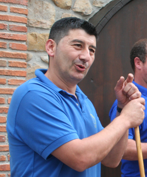

"El Trulli" es el PARRILLERO. No tiene ningún tipo de discusión decir que es el mejor parrillero de todo Asturias. Ni Bob Esponja es capaz de manejar las pinzas ni el cuchillo mejor que él. el truliSolamente a él se le puede ocurrir la brillante idea de organizar jornadas y jornadas. En una de ellas, conoció a "Caribe". Un enorme toro de 1.700Kg que le venía ni que al pelo para organizar las jornadas gastronómicas del Toro en la Sidrería Muros. Lo que no se podía imaginar es el revuelo que se pudo organizar con el Toro.

España Directo (Programa que de aquella se emitía en TVE), La Nueva España y otros medios de comunicación se dieron cita para tal acontecimiento. Como decían en el periódico Todavía hay esperanza para «Caribe». El enorme toro semental de 1.700 kilos adquirido por un llanisco para ser sacrificado podría librarse de la muerte. Su descomunal tamaño es su mejor aliado: sus cuidadores y su propietario no encuentran un matadero con un puesto de sacrificio lo suficientemente grande para él. Así que el semental, que ayer fue «presentado en sociedad» en Nueva de Llanes, podría seguir vivo y dar con sus huesos en un centro faunístico de Sevilla, cuyos propietarios han mostrado interés por adquirirlo. Los ganaderos Ángel Fernández y Víctor Fernández Alonso mostraron ayer el toro a casi un centenar de curiosos en la capital del valle de San Jorge. «Caribe», de 5 años, ha ganado multitud de concursos y ya ha cumplido como semental, al alcanzar el máximo de dosis recomendadas por los expertos. La idea inicial de Víctor Fernández era celebrar unas jornadas gastronómicas con su carne. Pero el gigantesco toro se resiste a acabar en la parrilla
~Un placer para los sentidos~
El Truli es un hombre sano, simpático que ama su profesión de cocinero por encima de todo. En un reportaje para la TPA el gran Truli nos cuenta como se inició en este mundo, invitando a todo el que lo desee a su sidrería a degustar los mejores platos a la parrilla de todo Asturias.
@ Sidrería Muros. Queda permitida su reproducción parcial o total. Este video es para todos. Derechos reservados.